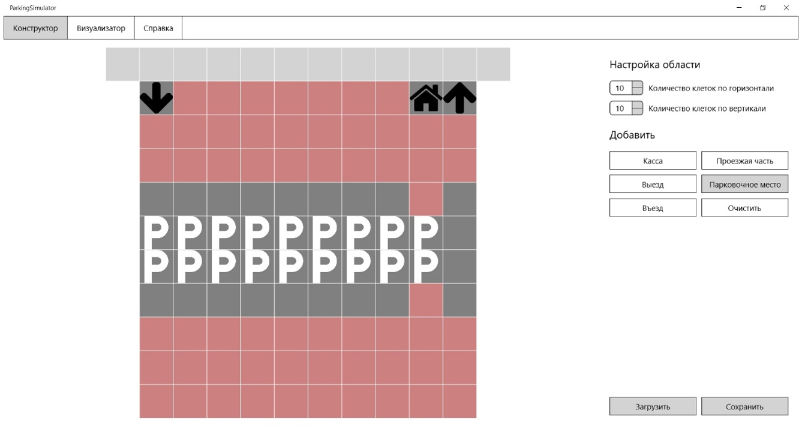

Работа с конструктором
Для начала работы с системой моделирования работы платной парковки необходимо запустить приложение двойным щелчком. После запуска системы откроется окно «конструктор», предназначенное для составления структуры парковки. В данном окне можно настроить необходимую размерность парковки, добавлять шаблоны: «касса», «проезжая часть», «въезд», «выезд», «парковочное место», сохранять созданную структуру парковки, а также загружать уже раннее созданные структуры парковки.
Выбор шаблона происходит с помощью наведения мыши на выбранный шаблон, далее нажимаем на нее. Кнопка выбранного шаблона изменит свой цвет на серый. На топологии система подсвечивает красным цветом область, где можно расположить шаблон.
Затем нажать на клетку, непосредственно прилегающую к дороге. На выбранной клетке появится значок выбранного шаблона.
При добавлении парковочного места необходимо нажать на кнопку «Парковочное место». Система подсвечивает красным цветом область, где можно расположить шаблон, а серым цветом область, где невозможно расположить шаблон.
При нажатии на кнопку «Очистить» происходит удаление всех шаблонов с топологии парковки.
Если вы уже сделали топологию парковки и хотите поменять размеры области, выводится сообщение с предупреждением о сбросе топологии. Если пользователь нажимает «Да», система закрывает окно сообщения, очищает топологию парковки и изменяет размеры области. Если нажимает «Нет» система закрывает окно сообщения и возвращает пользователя на прежнее окно.
При нажатии на кнопку «Сохранить» открывается окно сохранения в файл. Пользователю необходимо ввести имя сохраняемого файла и нажать на кнопку «Сохранить». Система закрывает окно и возвращает пользователя на окно конструктора.
При нажатии на кнопку «Загрузить» отображается окно открытия файла. Пользователю необходимо ввести имя открываемого файла или выбрать его в проводнике и нажать на кнопку «Открыть». Система закрывает окно и возвращает пользователя на окно конструктора.
Из этой вкладки можно перейти к другим экранным формам: «визуализатор» и «справка». Для этого необходимо кликнуть мышью по выбранной вкладке.
Назад